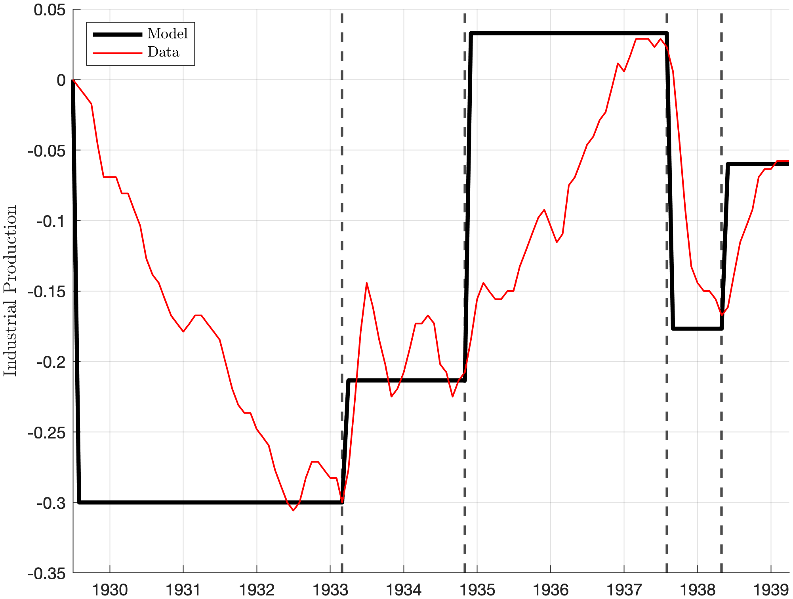

Download
Abstract
In standard New Keynesian models, future interest rate cuts have larger effects than current cuts — this is called the forward guidance puzzle. We argue that the forward guidance puzzle is not a puzzle. We show the puzzle arises from an implausibly large monetary regime change, exceeding anything in U.S. history since the Great Depression. By calibrating our model to four regime changes during the U.S. Great Depression, disciplined by changes in long-term bond yields, we find the model’s predictions are broadly consistent with historical data.
Figure 3a: Response to Forward Guidance Shocks in the Model and in the Data

Citation
Eggertsson, Gauti B., and Finn Schüle. 2024. “The Forward Guidance Puzzle is Not a Puzzle.” NBER Working Paper 33180. https://www.nber.org/system/files/working_papers/w33180/w33180.pdf.
@article{ES24,
author = {Gauti B. Eggertsson and Finn Schüle},
year = {2024},
title ={The Forward Guidance Puzzle is Not a Puzzle},
journal = {NBER Working Paper},
volume = {33180},
url = {https://www.nber.org/system/files/working_papers/w33180/w33180.pdf}}